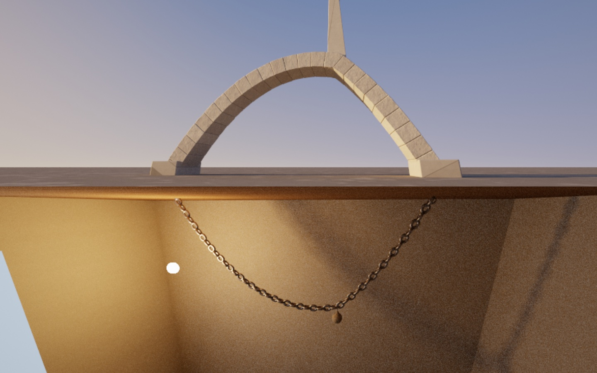
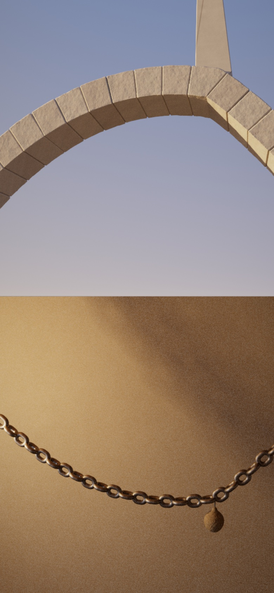
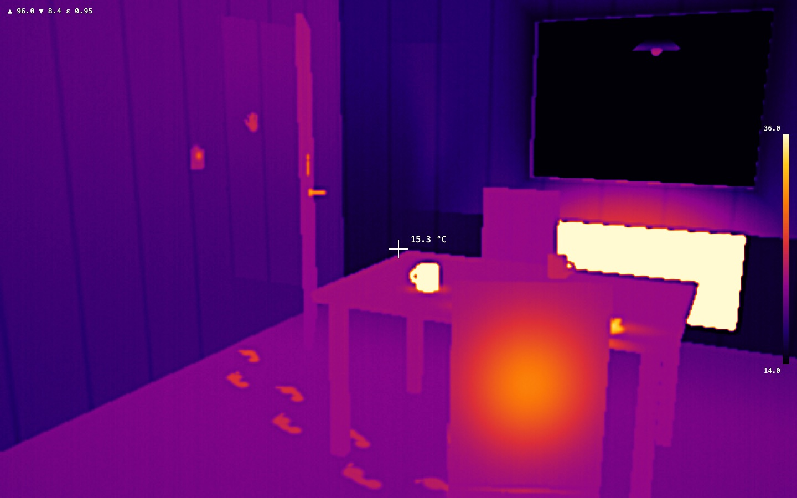
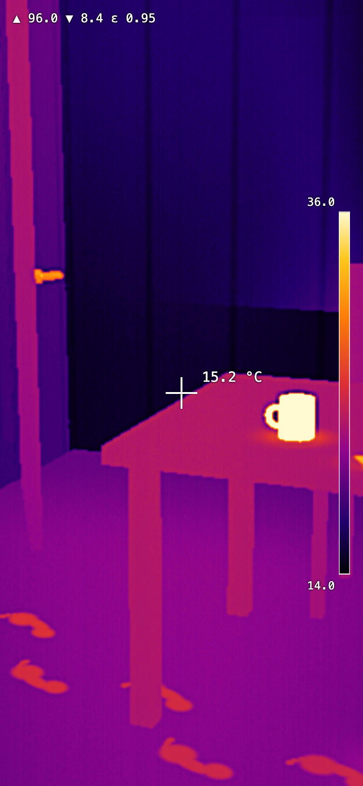
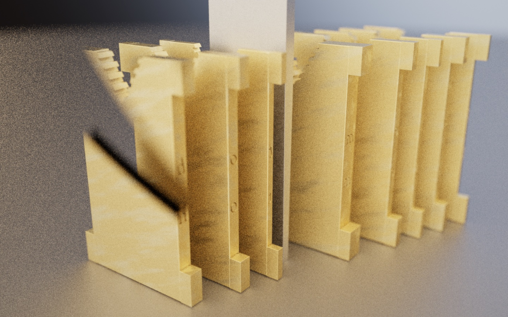
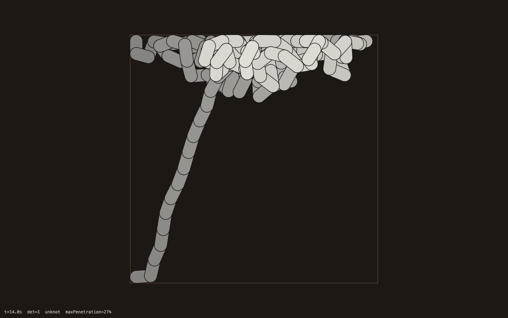

36 concepts went through four prior-art researchers and five independent critics. Four survived to a 30-minute sensory spike each. None of the spikes looks extraordinary yet. One concept is clearly the strongest.
My pick: As Hangs. Pull a chain down and a stone building rises in the mirror above it; push it up and the stone falls. It is the only concept all five critics kept. The verb is the physics itself, so there is nothing to caption.
Honest caveat: its spike proves the composition reads in one glance, but the stone still looks like a clean 3D render, not a photograph. Making one arch read as real stone in raking light is the first job of stage 2, before any mechanics.
| Finalist | The verb | Critics who kept it | Spike verdict | Odds it ends up great |
|---|---|---|---|---|
| As Hangs | Pull down, it stands up | ●●●●● 5 of 5 | Composition works; stone not yet photographic | about 1 in 3 |
| Still Warm | Touch, and your heat fades with theirs | ●●●○○ 3 of 5 | Looks like real thermal footage; not beautiful | about 1 in 5 |
| Linotype | Type, and your words become metal | ●●●○○ 3 of 5 | Failed: brass reads as yellow plastic | about 1 in 7 |
| Tangle | Shake, and physics ties a knot | ●●○○○ 2 of 5 | Knot detector works; the cord tied no knots | about 1 in 10 |
A horizon splits the screen: below, an iron chain hangs under a workshop lamp; above, the same curve stands upside down as a stone arch in late sun. Pull the chain down and a spire rises where you pulled; hang chains from chains and a vaulted building grows; push the chain up and the stone above cracks and falls.


Judged against the Shadertoy front page and Stålberg: the chain reads as real iron and the mirror reads instantly, but the stone is clean and uniform and the sky is a gradient. It looks like a good hobbyist render. The parts needed to make stone read as stone are known: a bare limestone plain, haze, a richer sky, chipped and varied blocks, and soft bounce light. They are a few days of craft, not a research problem.
Before you touch it, the piece performs its own verb once: a small sack drops onto the chain, the chain kinks, and above it a spire heaves up out of the arch and settles with a puff of dust. You pull the chain with your thumb; above, the stone waits as bare timber centering; let go and the chain swings and settles, and the stones drop into place one by one, each with a knock. Muted, the rising spire and the falling stone carry it.
Pull down, and it stands up. Robert Hooke, 1675: "As hangs the flexible line, so but inverted will stand the rigid arch." A hanging chain is in pure tension; flipped, the same curve is in pure compression. Pushing the chain up makes a shape stone cannot hold, so it falls. Stone stands only where a chain would hang.
Not found: two live worlds coupled in real time, stone that falls when the chain lies, and a vault you can walk into.
Chains hung from chains become vaults and Gaudí's branching tree-columns; weights become towers; the sun moves across the stone. Push up anywhere and watch the building fail, then rebuild. Finally step up through the horizon and stand inside what you made, hearing its echo computed from its real volume.
That it reads as a form-finding demo with a mirror shader: a beautiful remake rather than a thing nobody has seen. Close behind: building chain nets in 3D with one thumb, and stone that looks rendered rather than real.
About 1 in 3. The idea and verb are the best of the 36; the outcome depends on whether the stone, light, iron and sound reach photographic quality.
A thermal camera in a kitchen someone has just left: a chair back still glowing, a steaming mug, footprints warming toward a door left ajar. Everything they touched is fading on a real cooling clock, and when you touch the screen your own warm fingerprint appears and fades at the same rate as theirs.


It looks like real thermal footage after 25 minutes, because a thermal image really is a smooth temperature field, which is what the code computes. But thermal images are flat and blocky by nature, so the ceiling for beauty is low. The moment that would make it work (your own print glowing and fading beside theirs) can't be shown in a still.
A cold purple room with warm traces: the mug, the chair, footprints getting warmer toward a door that is still swinging shut, its handle white-hot. Your touch leaves a warm print that starts fading at once. Dragging follows the footprints. Fully readable muted.
Touch, and look. Looking is a race against cooling, and touching makes you part of the evidence.
Not found: a wordless story told only in heat that disappears while you read it.
A whole house cooling in real time. Put the last hour in order from temperature alone (a 45 °C mug was poured about twenty minutes ago); find your own warm reflection in the cold window glass; watch the last trace go out.
Its substance is writing and level design, not computation, which is how Ovation went wrong. Over a ten-minute visit, Newton cooling is hard to tell apart from a simple fade.
About 1 in 5. The strongest unease in the set within two seconds; the depth depends on a story I would have to write well.
Type a line and a hot-metal Linotype machine assembles your words from falling brass matrices, wedges them tight with steel spacebands and casts them as a warm, mirror-reversed slug of lead. There is no backspace; then the machine takes your sentence apart and sorts every matrix home by the teeth on its head.

The plates read as matrices, but the brass looks like yellow plastic, the letters are too small to be the hero, and the steel spaceband looks like card. This confirms the feasibility critic: this object's identity is precise machinery, and modelling it in code risks a CAD animation.
Macro on brass matrices clattering into the assembler, the lead pot glowing. Each key you press releases a matrix that falls with its own travel time, so typing too fast lands letters transposed. On a phone, you type on the machine's own 90-key keyboard instead of the phone's.
Type, and every keystroke commits metal. A mistake means running a finger down the first two key columns ("etaoin shrdlu"), casting the line anyway and throwing it in the hellbox.
The full cycle (assemble, justify, cast, distribute), the machine's own failures (transposed letters, a squirt of lead from a loose line), and the slug you keep or remelt.
The modelling load. A machine with hundreds of visible parts tends to look like a CAD animation, and the slug's arrival risks becoming an exhibit you watch rather than a thing you make.
About 1 in 7. The cleanest novelty in the set, with a spike that showed the look is the hard part.
Shake a charging cable in a box for a few seconds and physics ties it in a knot; pull the ends and the page names it: trefoil, figure-eight, 5₂, or, half the time, nothing at all. On a phone the phone is the box, and a pocket mode tells you which knot your walk tied.

The knot identification is right: it computes a knot invariant from the cord's crossings and returns 1 for no knot, 3 for a trefoil and 5 for a figure-eight on test shapes. After tuning, it never overlapped itself by more than a third of its thickness. But it tied no knot in 14 simulated seconds across three runs, and the image is a cord in a box.
A white cable loose in a wooden box. Drag (or shake the phone) and it tumbles; when it settles, the ends draw apart and a clean knot cinches out of the mess, with its name beneath it.
Shake. The universe's tendency to tangle is the joke, and the knot's name is the punchline.
Not checked by search (the budget had run out), so treat novelty as unverified.
Every shake gives a new knot to collect; longer cables knot more often, as the paper found; pocket mode turns an ordinary walk into a knot.
Physics honesty: if the cord ever passes through itself, the named knot is a lie. Close behind, the payoff is a word on a cord in a box.
About 1 in 10. The funniest idea here, with the weakest image and an unproven core.
If you would rather have unease than wonder, Still Warm is the alternative, with the risk that its depth is a writing job. I would not start with Linotype or Tangle on current evidence.